நாடி அமைப்பு
நுண்ணுடல் 72,000 நாடிகளைக் கொண்டது; அவற்றுள் 14 நாடிகள், நுண்ணுடலிலிருந்து பருவுடலுக்குப் பிராணனைக் கொண்டு செல்வதில் மிக முக்கியமானவையாகக் கருதப்படுகின்றன. நாடிகளில் ஏற்படும் இடையூறு உடல் அல்லது மன நோய்களுக்கு வழிவகுக்கக்கூடும்.
ஒலி
புல்லாங்குழல்: இந்த இணையதளத்துக்காக இயற்றப்பட்ட மூல ராக இசையமைப்பு
மோகன ராகம்
ஸ்ரீ கணபதி சச்சிதானந்த ஸ்வாமிஜி அவர்கள், வாழ்வை மாற்றியமைக்கும் தமது திவ்ய நாம சங்கீர்த்தனத்திற்காகவும் (இறைவனின் திருநாமங்களைப் பாடுதல்), உலகெங்கும் எண்ணற்ற வாழ்க்கைகளைத் தொட்டுள்ள நலம் & தியான இசைக்காகவும் பரவலாக அறியப்படுகிறார்கள்.
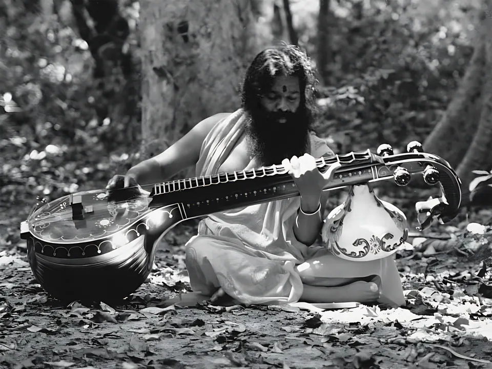
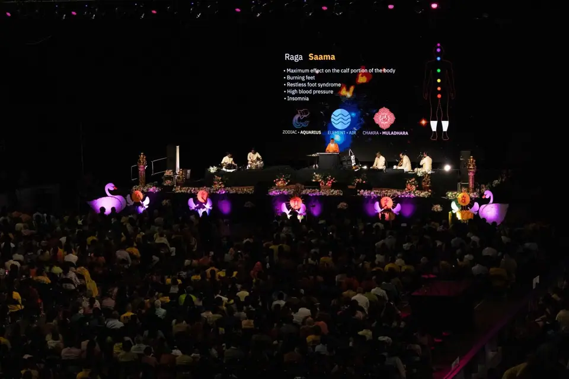
தொன்மையான வேத உபதேசத்தில் நாத சிகித்ஸா என வேரூன்றியுள்ள, ஒலி மூலம் நலமளிக்கும் முறையையே இன்று உலகம் இசை சிகிச்சை என்று அழைக்கிறது. இசை ஸ்வரங்களும் தாளங்களும் மனித உடலில் ஏற்படுத்தும் விளைவுகள் குறித்துப் பல தசாப்தங்களாக மேற்கொண்ட ஆழ்ந்த, உள்ளுணர்வு சார்ந்த ஆய்வு, பயனுள்ள இசை சிகிச்சை குறித்த ஆழ்ந்த ஞானத்தை ஸ்ரீ ஸ்வாமிஜி அவர்களுக்கு அளித்துள்ளது.
இதை ராக ராகினி வித்யா எனும் தொன்மையான இந்திய அறிவியலுடன் இணைத்து, அவர்கள் உலகெங்கிலும் உள்ள ரசிகர்களுக்கு நலம் தரும் இசையை வழங்குகிறார்கள். இசை நிகழ்ச்சியில், பாரம்பரிய இந்திய இசைக்கருவிகளை இசைக்கும் கலைஞர்களின் துணையுடன், மனத்தைத் தளர்த்தும் மெல்லிசைகளையும் உற்சாகமூட்டும் மெல்லிசைகளையும் மாறி மாறி வழங்குகிறார்கள்.
“பாரம்பரிய அறிவியல்களிலும் நவீன அறிவியல்களிலும் தேர்ச்சி பெற்ற ஒரு நாதயோகியால் மட்டுமே இசைக் கலையை நலம் தரும் இசை சிகிச்சை மருத்துவத்துடன் இணைத்து நாத சிகிச்சையை நிகழ்த்த முடியும்.”
அவதூத தத்த பீடம்
நுண்ணுடல் 72,000 நாடிகளைக் கொண்டது; அவற்றுள் 14 நாடிகள், நுண்ணுடலிலிருந்து பருவுடலுக்குப் பிராணனைக் கொண்டு செல்வதில் மிக முக்கியமானவையாகக் கருதப்படுகின்றன. நாடிகளில் ஏற்படும் இடையூறு உடல் அல்லது மன நோய்களுக்கு வழிவகுக்கக்கூடும்.
ஒலி அதிர்வின் ஓட்டமான நாதம், பிராணனின் ஓட்டத்திற்கு இணையானது. நாடிகள் வழியாகப் பாயும் பிராண ஓட்டத்துடன் இசைந்து, குறிப்பிட்ட ராகங்கள் உடலின் குறிப்பிட்ட உறுப்புகளைக் குணப்படுத்துவதுடன் தொடர்புடையவையாக உள்ளன.
எண்ணங்கள் மனத்தில் ஒலியாக வெளிப்படுகின்றன. நலம் தரும் இசை உயர்ந்த அதிர்வுகளை அறிமுகப்படுத்தி, நாள்தோறும் பெருகும் எண்ணங்களை அமைதிப்படுத்தி, இறுதியில் அவற்றைக் கட்டுப்படுத்தி, மனத்தைத் தியானத்திற்குத் தயார்ப்படுத்துகிறது.
மெல்லிசையின் தூய ஒலியான நாதத்தைப் பயபக்தியுடன் அணுகி, முழு ஒருமுகப்பாட்டுடன் உள்வாங்கும்போது, அதன் அதிர்வுகள் “கண்ணாடி போன்ற மனத்தில் படிந்த தூசியைத் துடைக்கின்றன”; மனிதனுள் உறைந்துள்ள இயல்பான தெய்வீகம் பிரதிபலிக்கிறது.
இசை என்பது என் மதம். இசை என்பது என் மொழி. இசை என்பது என் ஆன்மா. இசை என்பது என் வெளிப்பாடு.
ராக-ராகினி எனும் தொன்மையான இசை முறையை ஸ்ரீ ஸ்வாமிஜி அவர்கள் ஆழ்ந்து அறிந்தவர்கள்; மெல்லிசைகளின் ஈடிணையற்ற களஞ்சியம் அவர்களுக்கு வசப்பட்டுள்ளது; இன்றைய இசையியலுக்குள் அந்தத் தொன்மையான முறையைப் பயன்படுத்திப் பல புதிய ராகங்களை அவர்கள் உருவாக்கியுள்ளார்கள். அவர்களின் இசையமைப்புகள் மிகப் பெருமளவில் இருப்பதால், இந்த ராக-ராகினி வடிவத்தைக் குறிக்க சாகர — கடல் — என்ற பட்டம் வழங்கப்பட்டது.
தொன்மையான முறையின் கட்டமைப்புக்குள் ஸ்ரீ ஸ்வாமிஜி அவர்கள் எண்ணற்ற புதிய ராகங்களை உருவாக்கியுள்ளார்கள். அவற்றுள் சில:
தாமே தேர்ந்தெடுத்த 1,000-க்கும் மேற்பட்ட ஒலிகள் நிரல்படுத்தப்பட்ட ஒரு சின்தசைசரில், தலைசிறந்த இசைக்கலைஞர்களின் துணையுடன் ஸ்ரீ ஸ்வாமிஜி அவர்கள் இசைக்கிறார்கள்; அதை அவர்கள் அன்புடன் தத்த வீணை என்று அழைக்கிறார்கள்.

இசையின் நலமளிக்கும் அம்சங்களுக்கும், நலம் தரும் இசை நிகழ்ச்சிகளில் அவர்கள் பயன்படுத்தும் கூறுகளுக்கும் சிறப்பு முக்கியத்துவம் அளித்து, பல தசாப்தங்களாக எடுக்கப்பட்ட புகைப்படங்களுடன் கூடிய, ஸ்ரீ ஸ்வாமிஜியின் இசைப் படைப்புகளின் மாபெரும் தொகுப்பு.
ராக ராகினியும் தியான சிகிச்சைக் கச்சேரியும் மீண்டும் உயிர்ப்பிக்கப்படுகின்றன; நாத சிகிச்சை குறித்த ஆய்வும் மேம்பாடும் தொடங்குகின்றன.
எட்டு மாத நாத பிரசாரப் பயணம்.
வேதத் தேர்வுகள், வேத நிதி ஆகியவற்றுடன், நாத நிதி பட்டமும் அறிமுகப்படுத்தப்படுகிறது.
டிரஸ்ட் நிறுவப்படுகிறது. இது ஸ்ரீ ஸ்வாமிஜியின் நூல்கள், சொற்பொழிவுகள், இசை ஆகியவற்றை வெளியிடுகிறது.
31 மே அன்று மைசூரு ஆசிரமத்தில் இசை ஸ்வரங்களின் மண்டபம் திறந்து வைக்கப்படுகிறது.
உலகப் புகழ்பெற்ற இசைக்கலைஞர்களின் துணையுடன், ஸ்ரீ ஸ்வாமிஜி அவர்கள் பல தசாப்தங்களாக நலம் தரும் இசை நிகழ்ச்சிகளை — தியானத்துக்கான இசையை — வழங்கி வருகிறார்கள். பல இசை நிகழ்ச்சிகள் தமக்கென்று தனி ராக சாகரப் பெயரைக் கொண்டுள்ளன.
எல்லையற்ற கருணையுடன், வரவிருக்கும் அனைத்து இசை நிகழ்ச்சிகளின் டிக்கெட் விற்பனை வருவாயையும் இயற்கைப் பேரிடர் நிவாரணப் பணிகளுக்கு நன்கொடையாக வழங்க ஸ்ரீ ஸ்வாமிஜி அவர்கள் சங்கல்பம் செய்துள்ளார்கள். தியானத்துக்கும் நலத்துக்குமான இசை அமர்வில் கலந்துகொள்வது இரட்டைப் பயனைத் தருகிறது: தனிப்பட்ட நலம், இயற்கைப் பேரிடர் நிவாரணத்திற்கான ஆதரவு.
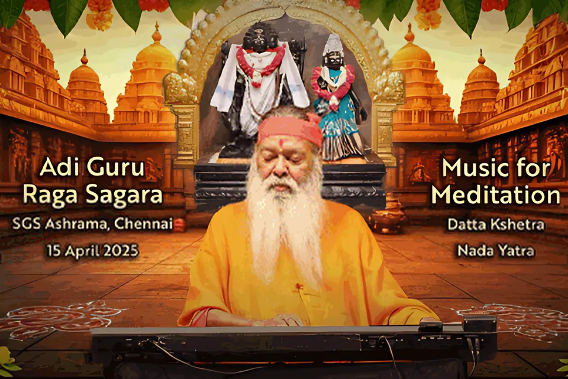
தியானம் & நலம்ஆதி குரு ராக சாகரdattapeetham.org தளத்தில் உள்நுழை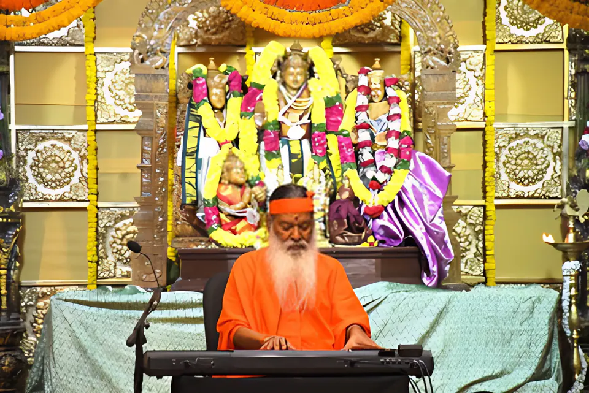
தியானம் & நலம்விஸ்வாவசு ராக சாகரdattapeetham.org தளத்தில் உள்நுழை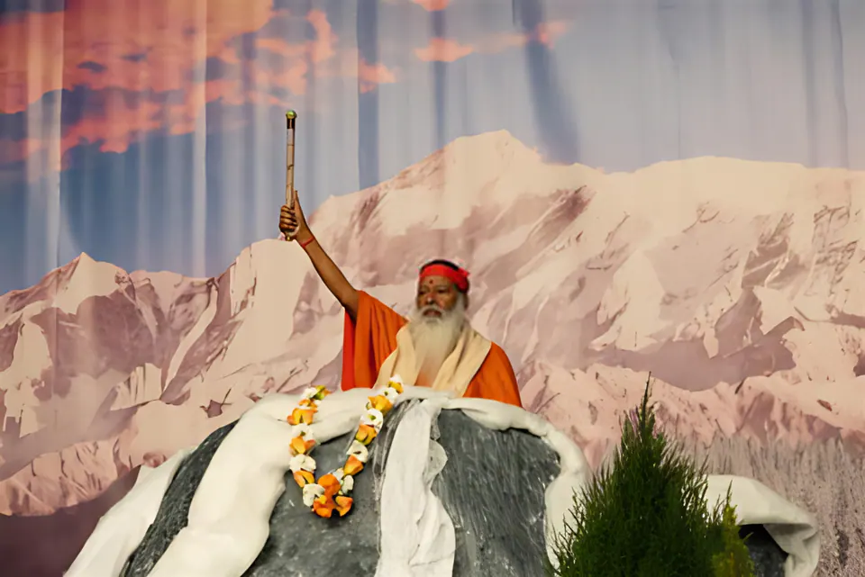
தியானம் & நலம்அந்தர்முக ராக சாகரdattapeetham.org தளத்தில் உள்நுழை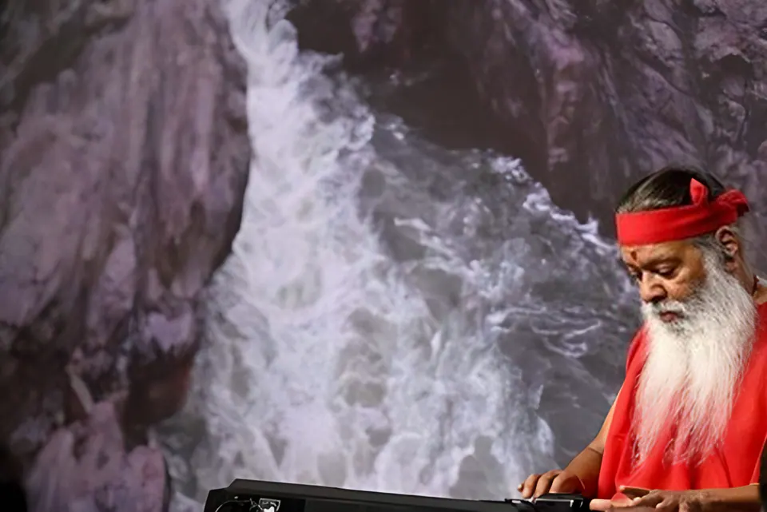
தியானம் & நலம்கிருஷ்ணாம்ருத ராக சாகரdattapeetham.org தளத்தில் உள்நுழை
ஆக்லாந்து, கார்னகி ஹால், டாவோஸ், ஹைதராபாத் ஆகிய இடங்களின் நேரலை ராக சாகர பதிவுகளும், ஒரு வாத்திய இசைத் தொகுப்பும் — Spotify, Apple Music-இல் கேட்கலாம்.


ஸ்ரீ ஸ்வாமிஜியின் அனைத்து இசையும்
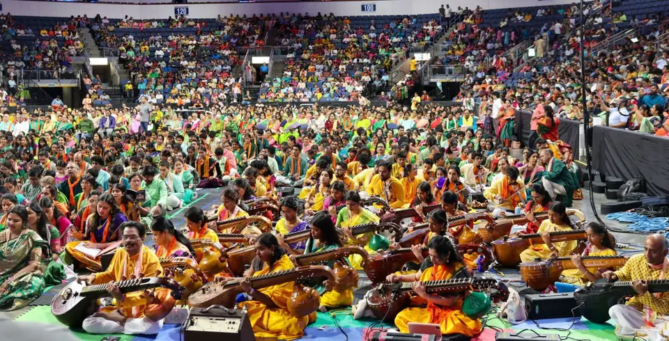
ஸ்ரீ ஸ்வாமிஜி அவர்கள் திறமைமிக்க இசையமைப்பாளரும் பாடகரும் ஆவார்கள் — பல மொழிகளில் பாடலியற்றுபவரும் இசையமைப்பாளருமான பன்முகத் திறமை கொண்ட வாக்கேயக்காரர்; மெட்டுகளை உருவாக்குவதிலும் தாளங்களை அமைப்பதிலும் வல்லவர்கள். பல்வேறு தெய்வங்களைப் போற்றும் 3,000-க்கும் மேற்பட்ட பஜனைகளை அவர்கள் இயற்றியுள்ளார்கள்.
அச்சத்தைக் கடந்து உள்ளார்ந்த அமைதியைக் காண்பதற்கான வழியாகத் திவ்ய நாம சங்கீர்த்தனத்தை அவர்கள் ஆர்வத்துடன் வலியுறுத்துகிறார்கள்; பக்திப் பாடலின் பாதையில் பல்லாயிரக்கணக்கான பக்தர்களை ஊக்கப்படுத்தியுள்ளார்கள். அவர்களின் அமர்வுகள் இசை அறியாத சாதாரண ரசிகரையும் கர்நாடக இசை அறிஞரையும் ஒருசேரக் கவர்கின்றன.
ஸ்ரீ பால ஸ்வாமிஜி அவர்களும் உன்னத உத்வேகம் பெற்ற பாடகரும் பாடலாசிரியரும் ஆவார்கள்; தமது குருவான ஸ்ரீ ஸ்வாமிஜியையும் பல்வேறு தெய்வங்களையும் போற்றி, சம்ஸ்கிருதம், தெலுங்கு, கன்னடம், தமிழ், ஆங்கிலம் ஆகிய மொழிகளில் பாடல்களை இயற்றியுள்ளார்கள்.
31 மே 1998 அன்று ஸ்ரீ ஸ்வாமிஜி அவர்களால் திறந்து வைக்கப்பட்ட, மைசூரு ஆசிரமத்தில் இதற்கென்றே கட்டப்பட்ட இந்த அரங்கம், ஆயிரக்கணக்கான இசை நிகழ்ச்சிகளை நடத்தியுள்ளது. இது அதிநவீன ஒலி, ஒளி, அரங்க அமைப்புகளைக் கொண்டுள்ளது.
விசிறி வடிவிலான இந்த வடிவமைப்பு, ஸ்ரீ ஸ்வாமிஜி அவர்கள் விவரிக்கும் ஒரு நிகழ்வால் உத்வேகம் பெற்றது: காட்டில் சீதையைத் தேடிக்கொண்டிருந்த ஸ்ரீ ராமருக்கு, ஹனுமான் ஒரு பனையோலையால் விசிறினார். அந்தப் பனையோலை விசிறியின் வடிவையே இந்த அரங்கம் கொண்டுள்ளது; இதன் நுழைவாயில் கிழக்கே, புனிதமான சாமுண்டி மலையை நோக்கி அமைந்துள்ளது.
மாபெரும் இசையமைப்பாளர்களின் பெரிய உருவப்படங்கள் சுவர்களை அலங்கரிக்கின்றன. ஓர் இசையமைப்பாளரின் படைப்பு இசைக்கப்படும்போது, அந்த உருவப்படத்தின் முன் உள்ள விளக்குகள் ஒளிர்கின்றன — மகான் தியாகராஜரின் “ஸாமஜ வரகமனா” பாடப்படும்போது, தியாகராஜரின் உருவப்படம் ஒளிர்கிறது.
சங்கீத சாஸ்திரத்தின் 22 ஸ்ருதிகளைக் (நுண்ணிசை இடைவெளிகள்) குறிக்கும் வகையில், இருபத்திரண்டு பிரம்மாண்டமான சிற்பத் தம்புராக்கள் அதன் தூண்களை ஒட்டி நிற்கின்றன.
நுழைவாயிலில் இசையுடன் தொடர்புடைய தெய்வங்களின் சிற்பங்கள் நிற்கின்றன: சைதன்ய மகாபிரபு, நாரத முனி, கருடன், விஷ்வக்சேனர், ஆஞ்சநேயர், தும்புரு, ஹயக்ரீவர், நந்தி, பிருங்கி, கணபதி.
ஏழு இசை ஸ்வரங்களுக்கான உலகின் முதல் மற்றும் ஒரே சன்னிதி; இங்கு ஒவ்வொரு ஸ்வரமும் ஒரு தெய்வமாக உருவகிக்கப்பட்டுள்ளது.
பல்கலைக்கழகங்கள், இசைச் சபைகள், கின்னஸ் உலக சாதனைகள் அமைப்பு ஆகியவை ஸ்ரீ ஸ்வாமிஜியின் இசையை அங்கீகரித்துள்ளன.
 மிகப் பெரிய இசை சிகிச்சை வகுப்பு — சிட்னி ஒபேரா ஹவுஸ்
மிகப் பெரிய இசை சிகிச்சை வகுப்பு — சிட்னி ஒபேரா ஹவுஸ்
6 ஏப்ரல் 2015 அன்று சிட்னி ஒபேரா ஹவுஸில், பங்கேற்றவர்களின் நலனுக்காகவும் உலகெங்கும் துன்புறுவோரின் நலனுக்காகவும், ஸ்ரீ ஸ்வாமிஜி அவர்கள் 1,814 பேருக்கு இரண்டரை மணி நேர இசை சிகிச்சை வகுப்பை நடத்தினார்கள்.
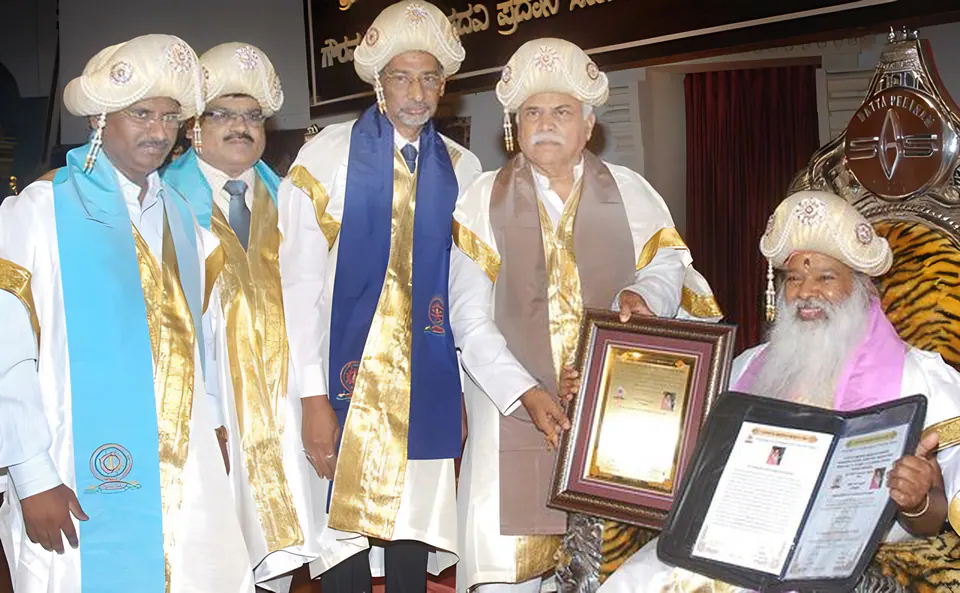
2013விஜயநகர ஸ்ரீ கிருஷ்ணதேவராய பல்கலைக்கழகம், பெல்லாரி — 22 ஜூன் 2013 அன்று மைசூரு ஆசிரமத்தில் வழங்கப்பட்டது.
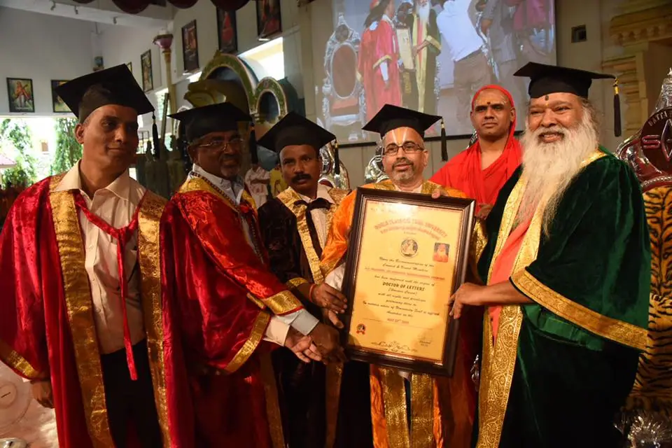
2016உலகச் செம்மொழித் தமிழ்ப் பல்கலைக்கழகம், லண்டன் — 23 மே 2016. விருதுகள் பக்கம் இதை இசையில் டாக்டர் பட்டம் என்று குறிப்பிடுகிறது; படத்தில் காணும் சான்றிதழில் “Doctor of Letters (honoris causa)” என்று எழுதப்பட்டுள்ளது.
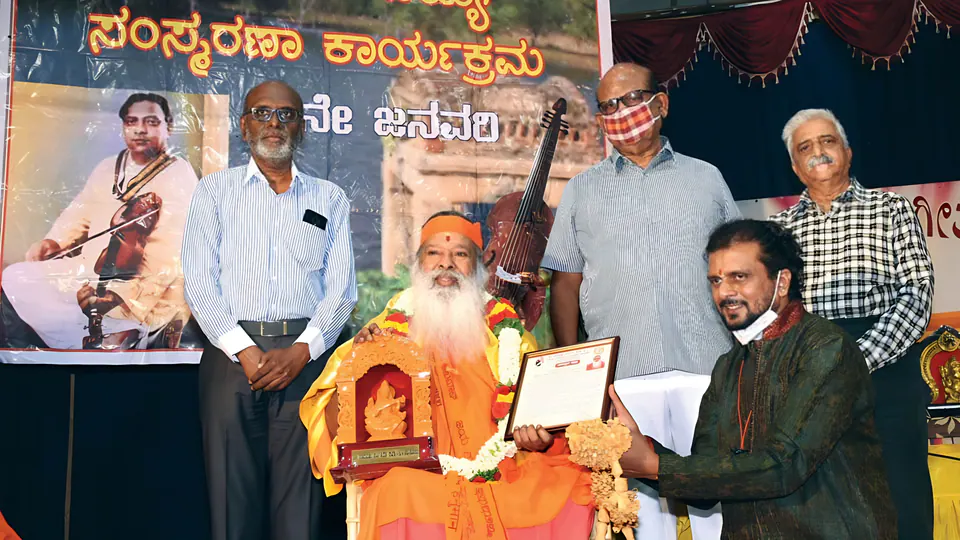
2022ஸ்ரீ நாதப்ரஹ்ம சங்கீத சபா மற்றும் சங்கீத ரத்ன மைசூரு டி. சௌடய்யா ஸம்ஸ்மரண வேதிகே, மைசூரு — 19 ஜனவரி 2022.
கர்நாடக மாநில டாக்டர் கங்குபாய் ஹங்கல் இசை மற்றும் நிகழ்த்துக் கலைகள் பல்கலைக்கழகம், அதன் 6-ஆவது பட்டமளிப்பு விழாவில், ராஜ் பவன், பெங்களூரு — 31 அக்டோபர் 2023.
 2025
2025
“ஸ்ரீ வெங்கடேஸ்வர வைபவம்” நாம சங்கீர்த்தனத்தில் 955 கலைஞர்கள், பாடகர்கள் மற்றும் வாத்தியக் கலைஞர்கள், CUTX ஈவென்ட் சென்டர், ஆலன், டெக்சாஸ் — 9 ஜூலை 2025.
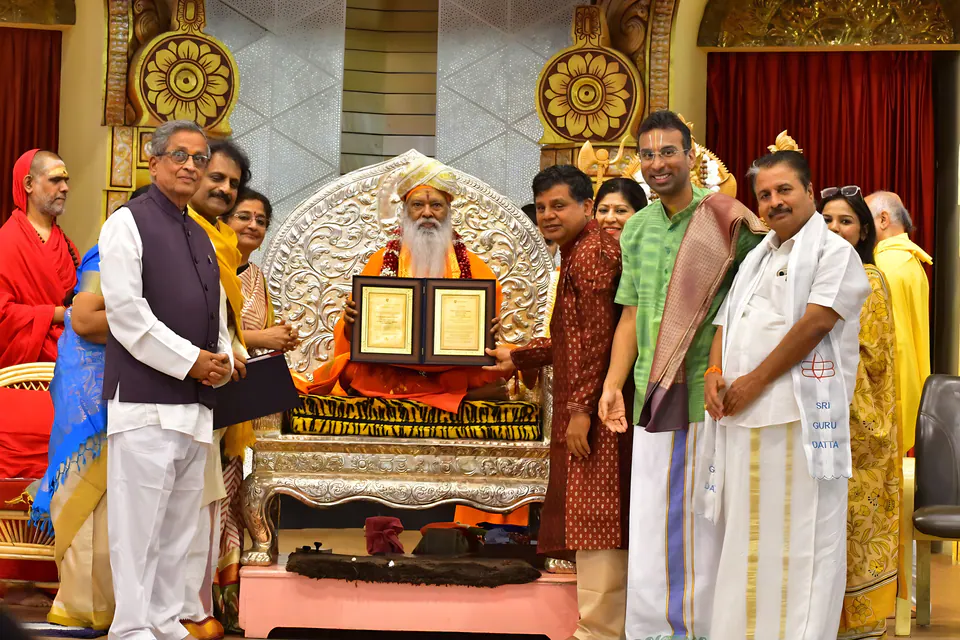
2026ஃப்ளோரிடாவின் வேதிக் வெல்னஸ் பல்கலைக்கழகம் வழங்கிய இந்த விருதுப் பட்டமும், நாத யோகத்தில் கௌரவ டாக்டர் பட்டமும் (ஆச்சார்யா) நாத மண்டபத்தில் அளிக்கப்பட்டன — 15 பிப்ரவரி 2026.

தியானத்துக்கும் நலத்துக்குமான இசை நிகழ்வில் கலந்துகொள்ளுங்கள், அல்லது ஓர் இசைத் தொகுப்புடன் வீட்டிலேயே தொடங்குங்கள். வரவிருக்கும் இசை நிகழ்ச்சிகளின் டிக்கெட் வருவாய் இயற்கைப் பேரிடர் நிவாரணத்திற்குச் செல்கிறது.